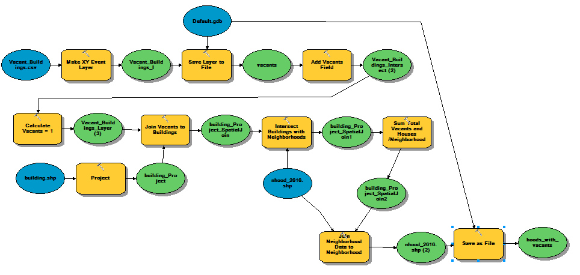
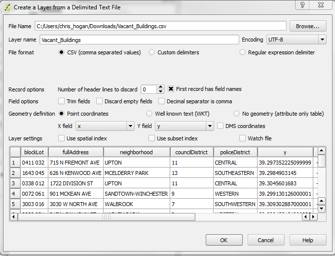
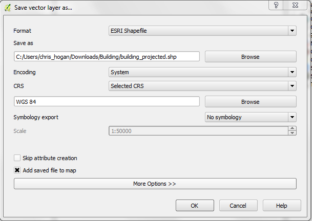
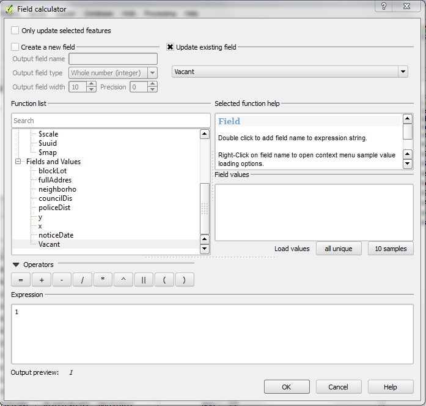
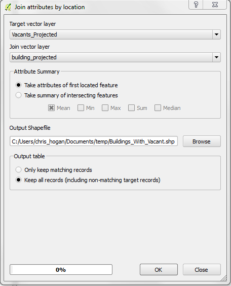
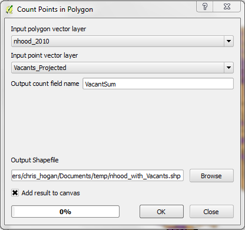
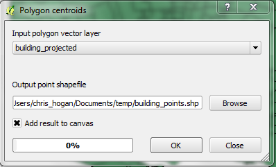

Geoprocessing Alternatives: FOSS & E$RI
Presentation by Chris Hogan | @hoganmaps Sweet slideshow library: reveal.js by Hakim El Hattab | reveal on GitHub
What is Geoprocessing?
“The fundamental purpose of geoprocessing is to provide tools and a framework for performing analysis and managing your geographic data.”-Some old ESRI document
What's Out There
Proprietary Desktop
ESRI - MapInfo - Manifold - SmallWorld - SuperMap
Open Source Desktop
GRASS - QGIS - uDig
Other tools
GDAL - OGR - PostgreSQL w/ PostGIS
The Basics: ArcGIS
The Good
Hundreds of Raster, Vector, and Map Tools Huge and Helpful Community Python - Bindings for everything Well Documented
The Bad
Expensive - You may have to sell a kidney Only 1 Platform (win), 32x
The Basics: QGIS
The Good
Many Tools Pre-Loaded (43+ Vector, 22+ Raster, GDAL and OGR) Tons of Plugins Free Cross Platform, 64x
The Bad
Slightly more difficult to use Documentation - lacking Not all tools have easy Py Bindings... yet
The Basics: Postgres/PostGIS
The Good
You Can Skip Alot of the Pre-Processing Excessive amounts of tools Free Cross Platform, 64x, Processing Beefcake
The Bad
Not Graphical/Less Beginner Friendly Not really Portable
OGR and GDAL
If you are familiar with FME (Spatial ETL) - These Command Line tools do tons of format conversions OGR:Vector::GDAL:Raster
The Good
Cross Platform Blazing Fast Free Used by
The Bad
Not Graphical/Less Beginner Friendly Does not have all the advanced geoprocessing tools
Example
Everyone you know is talking about open data or vacant housing in baltimore city. You went to the open data portal to poke around, and you were curious... What neighborhoods have the highest percentage of vacants? What does that distribution look like?
Basic Geoprocessing Workflow
Download the spatial data Transform the data into the same projection Intersect the Vacant Housing data with the Neighborhood Data Intersect the Total Building data with the Neighborhood Data Calculate the sum of each in every neighborhood
3 Datasets go in. One dataset comes out.
The ESRI Way
Models Individual Tools Python Scripts
The QGIS Way
Models (Plugin called 'Sextant') Individual Tools Python (Not much documentation)

Sextante Model Screen
Tool 1 - Add CSV Data

Tool 2 - Project Buildings

Tool 3 - Add Vacant Field

Tool 4 - Spatial Join Vacants to Buildings

Tool 5 - Add Sum of Vacants to Neighborhoods

Tool 6 - Create Building Points - 7 - Spatial Join to Buildings
